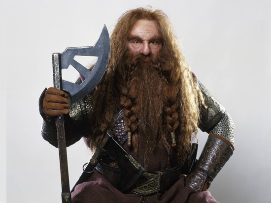

Középfölde
Középfölde a neve a J. R. R. Tolkien által elképzelt ősi földnek, ahol az író regényeinek jelentős része játszódik (ezek közül a három legismertebb és legjelentősebb A szilmarilok, A hobbit, ill. A Gyűrűk Ura).
A névről
Amikor Tolkien a rajongóknak írt leveleiben, vagy a kritikusoknak interjúkban próbálta megmagyarázni, mi vezette történetei írására és Középfölde kitalálására, gyakran hangsúlyozta, hogy Középfölde nem egy másik bolygón, vagy valami különleges módon megváltozott Földön található: valójában a Föld (ahogy Tolkien mitológiájában nevezik, Arda) kitalált múltjában helyezkedik el; kb. a 6000-7000 évvel ezelőtti időkig (megerősíti mindezt Arda nevének hasonlósága az angol earth illetve a német Erde szavakhoz). A könyveiben elmesélt történetek nagyrészt az Endor kontinens északnyugati részén játszódnak, amely a mai Európának felel meg; nagyon keveset tudunk világának más halandók lakta részeiről, bár a regények cselekménye és mellékelt térképek alapján ilyenek léteznek (pl. a messzi északi földek, vagy a nagyjából Afrikának megfeleltethető Délfölde). E kontinensek elhelyezkedése - alkotói megfontolásból és a könyvek cselekményéből szervesen következően - nem egyezik a Föld mai geológiai állapotával.
Történelme
Középfölde és egész Arda történelme számos korra tagozódik. A hobbit és A Gyűrűk Ura mind a Harmadkor végének (a Negyedkor hajnalának) eseményeivel foglalkoznak, míg A szilmarilok nagyrészt az Első korban játszódik. A korszakok sokszor mélyreható földrajzi (ebből következően, biológiai, néprajzi, politikai stb.) változásokkal is együtt jártak: szigetek, szubkontinensek tűntek el, a tenger alá merülve, vagy mozdultak el, általában a sötét erők elleni harc pusztító hatására. Az eredetileg lapos világot, Ardát például csak a Másodkor végén Eru, a teremtő változtatta gömbölyűvé.
Főbb testi természetű lények Középföldén
| Megnevezés | Leírás | Kinézet |
|---|---|---|
| Tündék | A tündék állnak a szellemi lényekhez a legközelebb. Halhatatlanok, ők a legerősebbek, a legszebbek és legbecsületesebbek. | |
| Emberek | Az emberek, avagy a „Másodszülöttek”, mind testi és lelki erőben, mind szépségben elmarad a tündék népétől. Azonban Ilúvatar különös Ajándékot adott nekik: a halandó létet. | |
| Törpök | A törpök emberszabású alacsony és széles, erőteljes, tömzsi és hosszú életű (de halandó) lények, valamennyien (nagyobbrészt asszonyaik is) szakállt viselnek. |  |
| Hobbitok | A hobbitok szerény, de nagyon régi eredetű, apró termetű nép, valószínűleg az emberek közeli rokonai. A törpöknél magasságban alig kisebbek, noha nem olyan vaskosak, zömökek, és szakállat sem hordanak. | |
| Entek | Az Entek (és huornok) (onodok) az ősidőkben a valák közreműködése által született faj, mely külsőleg a fákra hasonlít leginkább. A tündék „a fák pásztorainak” is nevezik őket. | |
| Orkok | Az orkok kétségkívül értelmes, ám egyben rendkívül gonosz lények. Az orkokat minden, a sötét erők szolgálatában nem álló teremtmény megveti, sőt még ők maguk is gyűlölik magukat és minden mást is. |  |
| Trollok | A trollok hatalmas, cammogó járású, gonosz lények, amelyek Középföldén ólálkodnak és minden teremtmény számára veszélyt jelentenek. Emberszabású, de több embernyi magas, torz testalkatú, idomtalan és csekély értelmű lények. | |
| Lidércek | A lidércek félig-meddig anyagi természetű „árnyak”, az emberi holtak lelkei, akikké haláluk után egyes emberek válnak. A lidérccé válásnak „természetes” okai is lehetnek, de lehetséges mágia vagy átok, vagy egyéb mesterséges beavatkozás hatására is. | |
| Ogrék | Orkokhoz hasonló lények. Az Elsőkorban tűnnek fel elsőnek. Feltűnnek ezen kívül A hobbit: Az öt sereg csatája című filmben. Itt az orkok oldalán harcolnak az Azog vezette seregben. |
Forrás: wikipedia